Proteksi sheet dan workbook
Proteksi mengunci rumus agar tidak terhapus tidak sengaja, dan dapat dilengkapi kata sandi.
Langkah praktik
- Blok sel yang boleh diubah, buka Format Cells > Protection, hilangkan centang Locked.
- Review > Protect Sheet.
- Isi kata sandi (opsional) dan pilih tindakan yang masih diizinkan.
- Untuk melindungi struktur sheet, gunakan Review > Protect Workbook.
Tips
Kata sandi yang lupa sulit dipulihkan. Catat di tempat aman.
Tangkapan layar praktik
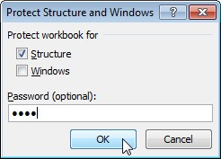
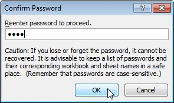
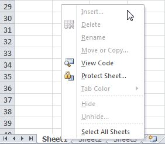
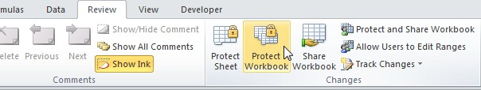
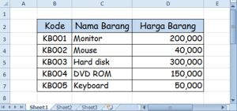
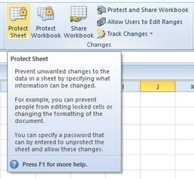
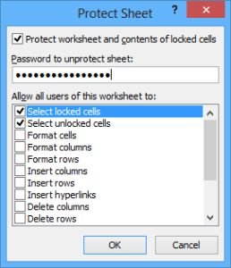
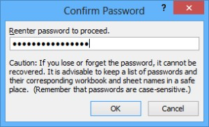
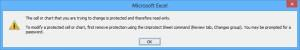
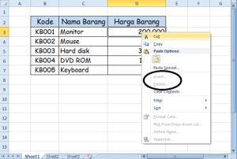
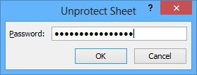